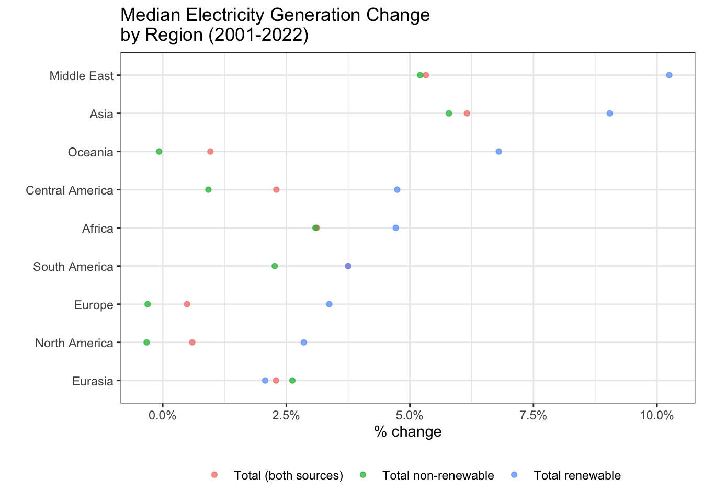
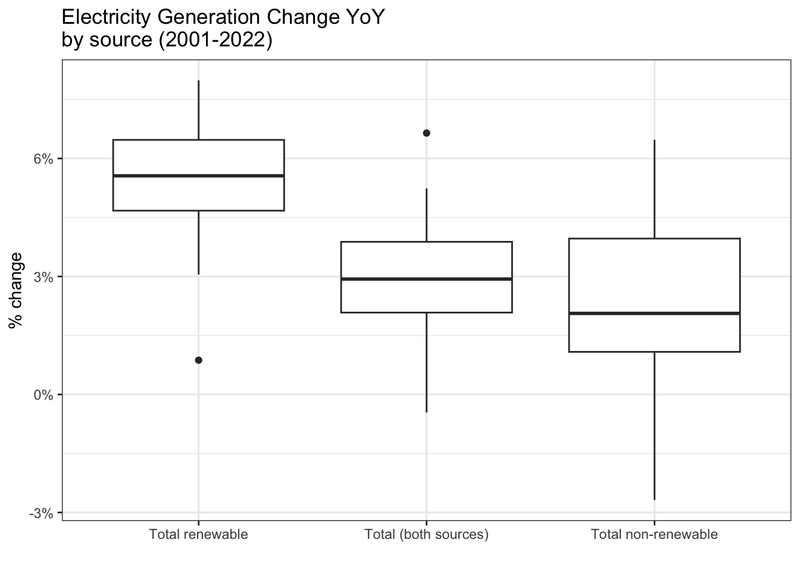

── Attaching core tidyverse packages ──────────────────────── tidyverse 2.0.0 ──
✔ dplyr 1.1.4 ✔ readr 2.1.5
✔ forcats 1.0.0 ✔ stringr 1.5.1
✔ ggplot2 3.5.1 ✔ tibble 3.2.1
✔ lubridate 1.9.3 ✔ tidyr 1.3.1
✔ purrr 1.0.2
── Conflicts ────────────────────────────────────────── tidyverse_conflicts() ──
✖ dplyr::filter() masks stats::filter()
✖ dplyr::lag() masks stats::lag()
ℹ Use the conflicted package (<http://conflicted.r-lib.org/>) to force all conflicts to become errors
Code
library(ggplot2)library(dplyr)library(plotly)
Attaching package: 'plotly'
The following object is masked from 'package:ggplot2':
last_plot
The following object is masked from 'package:stats':
filter
The following object is masked from 'package:graphics':
layout
Code
library(treemapify)library(redav)
For this analysis we want to observe if there is any changes in energy generation patterns throughout the years
`summarise()` has grouped output by 'Year'. You can override using the
`.groups` argument.
Generate the line chart to see the total energy generation by source over time.
Code
ggplot(generation_trends, aes(x = Year,y = Total_Generation, col = Technology) ) +geom_line() +labs(title =paste0("Energy Generation Trends"," by Source Over Years"),x ="Year", y ="Energy Generation (in thousands GWh)") +theme_bw() +theme(legend.position="bottom")
It is a bit hard to tell the overall trend since we have a lot of types of energy sources.
Thus, we group the similar categories together first and generate a new column for grouped sources to make the graph we are going to plot in the next step clearer.
`summarise()` has grouped output by 'Year'. You can override using the
`.groups` argument.
Code
custom_colors <-c("Solar energy"="#FFFF33", "Wind energy"="#8DA0CB", "Hydropower"="#00BFC4","Fossil fuels"="#D65F5F","Nuclear"="#FFB300", "Geothermal energy"="#F8766D", "Marine energy"="#66C2A5", "Pumped storage"="#8C6BB1", "Bioenergy"="#1C9099")ggplot(gp_generation_trends, aes(x = Year, y = Total_Generation, color = Grouped_Technology)) +geom_line() +scale_color_manual(values = custom_colors) +labs(title =paste0("Energy Generation Trends"," by Grouped Source"),x ="Year", y ="Energy Generation (in thousands GWh)", color ="Energy Source") +theme_bw() +theme(legend.position="bottom")
From the above graph we can divide the results into several aspects to talk about the key findings:
-Dominance of Non-Renewable Sources: We can see that the category “Total Non-Renewable” still remains the largest contributor to energy generation throughout the timeline. This shows our continued reliance on fossil fuels and related energy sources. However, its growth appears to slow down in recent years, and there might even be signs of a slight decline.
-Renewable Energy is growing: Renewable energy has been growing steadily, especially since 2010. This suggests that renewable sources are becoming a much bigger part of the global energy mix.
-Wind and Solar Energy is Expanding Rapidly: Among renewable sources, Wind Energy and shows the fastest growth, particularly after 2010. Solar energy also has a large growth. This reflects increased adoption of solar and wind technology globally. This gives us a direction to research further on their energy advancements and cost reductions of adopting these energy sources.
-Smaller, Emerging Sources: Sources like geothermal energy, liquid biofuels, and marine energy are growing slowly. They’re still minor contributors compared to solar and wind.
Now that we have an overview of energy consumption by Renewable and Non-Renewable sources let’s deep dive around statistics from renewable energy technologies (grouped technologies)
Code
# read datadf_statsregion <-read.csv('./raw_data/irena_electstats_region.csv')# change Electricity statistics to numericdf_statsregion$Electricity.statistics <-as.numeric(df_statsregion$Electricity.statistics)
Warning: NAs introduced by coercion
Code
# review global trendsdf_world <- df_statsregion |>filter(Region=='World')renewable_energies <-c('Solar','Wind','Hydro','Marine','Bio','Geo')# graph share per data type and technologydf_world |>filter(str_detect( Technology,paste0("^",renewable_energies,".*$",collapse="|") ) ) |>filter(Year <2023) |>group_by(Year,Data.Type) |>mutate(prop = Electricity.statistics/sum(Electricity.statistics,na.rm=TRUE)) |>mutate(Year =factor(Year)) |>mutate(Technology =str_extract(Technology,"^[^ ]+")) |>ggplot(aes(x=Year,y=prop,group=Technology,col=Technology) ) +geom_line() +scale_y_continuous("Share %",labels=scales::percent_format()) +facet_wrap(.~Data.Type) +theme_bw() +theme(axis.text.x =element_text(angle =90,vjust =0.5, hjust=1),legend.position="bottom") +ggtitle(paste0("World's Share of Electricity", "Generation and \nInstalled Capacity", "per Renewable Energy") )

Since 2000 Hydropower has been the primary renewable energy technology in the world. Nonetheless, we observe that Wind and Solar energy are gaining relevance since they contribute more and more to the share of Electricity Generation and Installed Capacity.
In order to assess the latest trends in renewable source technologies let’s review the electricity installed capacity per Region for 2022.
Warning: Removed 4 rows containing missing values or values outside the scale range
(`geom_point()`).

Most regions have Hydropower as the technology with most electricity installed capacity. This pattern is different for Asia and Europe where Solar energy is the predominant one. For most regions all renewable energy technologies are close in terms of installed capacity, except for Asia, Europe and North America where Hydropower, Solar and Wind deviate significantly from others.
The previous graph shows that Asia and Europe skews the distribution to the right due to their magnitude. In order to make a fair comparison, let’s analyze this pattern using change rate. For this case, we will analyze how electricity installed capacity changed from 2017 to 2022 (% change).
We observe that despite Asia, Europe and North America present high values for Solar and Wind technologies when we change to percentage increase South America takes the lead (>800% Solar and >100% Wind increase respectively), followed by Middle East (>500% Solar and >200% Wind increase respectively). Africa increased by 17% its Hydropower’s electricity installed capacity. For Geothermal, South America takes the lead with a >100% increase in electricity installed capacity from 2017 to 2022.
Previous graph shows that big magnitudes potentially overshadow interesting trends against other categories with relatively smaller amounts. Plotting percentage changes or creating indexes helps us to visualize this and in a multivariate setting biplot its really useful.
From previous graphs we observed an increasing adoption for different technologies, nevertheless let’s review how much it represents from the total energy comsumption.
In the above graph we observe an increase in the electricity generation across 2000-2022 for both non-renewable and renewable sources. To make this clearer let’s assess the YoY changes to see how much if sources have similar change rates or one is increasing more than other.
Boxplots show us that even though renewable and non-renewable have increased across the years the rate is higher for renewable. For example, year 2020 (Covid), non-renewable had a decrease of 2.6% YoY whereas renewable presented a 6.6% increase YoY, this gives us hint around renewable energies adoption.
Let’s review whether the latter pattern holds across regions
Total renewable electricity generation rate higher than non-renewable hold for almost all regions in the analyzed timeframe (except Eurasia). For Europe and North America non-renewable have a negative rate, but the Total is still positive (mainly driven by renewable).
##Is there any reduction in fossil fuel/carbon emissions globally or within different countries(territorial emissions)?
To answer this question, we utilize the dataframe: df_territorialemissions
First, we renamed our columns of the dataset df_territorialemissions, and then we start transforming our data for further exploration in carbon emissions over time by country and by its continent.
Here, we also want to get continent information which is provided on a separate sheet (from the National_Fossil_Carbon_Emissions dataset)
After processing the data we have, we can now visualize the average Emissions over time from 1990 to 2021 by Continents comparing to the world average.
Code
avgemissions <- investmentandemissions |>filter(Year >=1990) |>group_by(Continent, Year) |>summarize(averageemissions =mean(CarbonEmission, na.rm =TRUE), .groups ='drop')worldemissions <- investmentandemissions |>filter(Year >=1990) |>group_by(Year) |>summarize(averageemissions =mean(CarbonEmission, na.rm =TRUE), .groups ='drop')avgandworldemissions <- avgemissions |>left_join(worldemissions, by ="Year") |>rename("averageemissions"=`averageemissions.x`) |>rename("worldavgemissions"=`averageemissions.y`) ggplot(avgandworldemissions, aes(x = Year))+geom_line(aes(y = averageemissions, color ="Region Average"))+geom_line(aes(y = worldavgemissions, color ="World Average"))+facet_wrap(~Continent)+labs(title ="Average CO2 Emissions from 1990-2021 by Continent, Compared to World Average",y ="CO2 emissions (in Million Tonnes)",color ="World and Region Averages")+theme_grey(14)
Overall, we can see that the average world emission is still slightly increasing throughout 1990 - 2021. The graph shows that the world’s average Carbon emission is most largely contributed by Asia and North America. From the graph, we can see that the region average is significantly higher than the world average in both of these continents. Especially in Asia, we see a significant increase in carbon emissions through 1990 - 2021. There is a decrease in Carbon emission in Europe which crossed the world average at around 2008; it now produces less carbon than the average world emissions. There is a notable decrease in North America’s carbon emission, although still high above average. The other regions such as South America and Middle East marks a increase while Oceania, Central America, and Africa stayed roughly the same from 1990 - 2021.
We can continue by investigating the relationship between public investment on energy technology and carbon emissions.
##How does public investment in energy technology vary across regions/countries?
Rows: 98532 Columns: 4
── Column specification ────────────────────────────────────────────────────────
Delimiter: ","
chr (2): Country/area, Technology
dbl (2): Year, Public Investments (2021 million USD)
ℹ Use `spec()` to retrieve the full column specification for this data.
ℹ Specify the column types or set `show_col_types = FALSE` to quiet this message.
We know that there are a lot of zero values in our data, so we filter out the technologies that have more than 4000 0 values. The 0 values also means less investment in that particular techonology. Therefore, the technologies left are the most common investment aggregately around the world.
We now join the continent information with our data for public investment.
Code
mergedinvestmentdata <- filteredinvestmentovertime |>left_join(df_continents, by ='Country') |>drop_na()
Now, we can start building our visualization.
Code
mergedinvestmentdata |>group_by(Technology, Continent, Year) |>summarize(AveragePublicInvestment =mean(Public_Investment), .groups ="drop") |>ggplot(aes(x = Year, y = AveragePublicInvestment))+geom_line()+facet_grid(Continent ~ Technology) +labs(title ="Average Public Investments by Type of Technology and Continent from 1990 - 2021",y ="Average Public Investments by million USD") +theme_grey(13)+theme(strip.text.y =element_text(angle =0, hjust =1),axis.text.x =element_text(angle =45, hjust =1))
From the graph, we see that there is a lot of public investment in energy technology in South America comparing to all other continents. Especially with renewable hydropower, we can see that there might be a transition towards renewable hydropower in South America. In addition, we can see that in South America, Solar and Wind energy public investment are increasing as well. Another region that has more notable investment in technology is North America. We can see that it has investments in multiple renewable energy, as well as solar and wind energy.
Although we are able to look at a number of different relationships with this graph, we are unable to look closer to find exact numbers because of how many graphs there are. In addition, we had to filter out some energy technology because the data we have is very specific and some energy technology are very niche that there aren’t a lot of data and investment on them.
Now, we can get the total public investment in renewable energy for each of these countries from the df_finance dataset.
We join the two datasets to create the dataframe we want to analyze and make visualizations
Code
merged_data <- investmentandemissions |>filter(Year ==2021) |>left_join(toppublicfinance, by ='Country') |>drop_na()
We will visualize the relationship between total public investment and carbon emission here.
Code
merged_data |>filter(CarbonEmission <700) |>plot_ly(x =~Total_Public_Investment, y =~CarbonEmission,color =~as.factor(Continent), text=~Country,hoverinfo ='text') |>layout(title ="Total Public Investment vs. Carbon Emission by Country by Region in 2021",xaxis =list(title ="Total Public Investment (in Million USD)"), yaxis =list(title ="Carbon Emissions (in Million Tonnes)"))
No trace type specified:
Based on info supplied, a 'scatter' trace seems appropriate.
Read more about this trace type -> https://plotly.com/r/reference/#scatter
No scatter mode specifed:
Setting the mode to markers
Read more about this attribute -> https://plotly.com/r/reference/#scatter-mode
For better comparison side by side we also created a faceted scatterplot for the relationship between total public investment and carbon emissions.
Code
merged_data |>filter(CarbonEmission <600) |>group_by(Continent) |>ggplot(aes(x = Total_Public_Investment, y = CarbonEmission)) +geom_point(alpha =0.7, pch =21) +facet_wrap(~Continent) +labs(title ="Total Public Investment vs. Carbon Emissions by in 2021",x ="Total Public Investment (in Million USD)",y ="Carbon Emissions (in Million Tonnes)")+theme_grey(15)
From the above two graphs that presents the same data, we can see that there aren’t really a relationship between public investment and carbon emissions. An anomaly that we removed is China that has a really notable Carbon emission of 3000 million tonnes in 2021, which is significantly higher than all the other countries. Also, another notable country we omitted is India, with around 700 million tonnes in 2021. However, we can see that places with relatively high carbon emission don’t really allocate a lot of public investment to energy. We can see this pattern from the relatively vertical point distributions. This shows that country’s government need to put more effort for a transition to renewable energy in terms of allocating public investment for energy technology.
Here we want to compare if there’s any changes in 1990 and in 2021. We want to see if there’s a difference in leading emissions country as well as if there are any changes in leaders of public investment in energy technology. We process our datafram here by adding the information from 1990.
We now use our dataframe to plot a treemap that can visualize any changes.
Code
ggplot(mergeddatafortree, aes(area = CarbonEmission, fill = Total_Public_Investment, label = Country)) +geom_treemap() +geom_treemap_text(fontface ="italic", colour ="white", place ="centre",grow =TRUE)+facet_wrap(~Year)+labs(title ="Carbon Emissions and Public Investment by Countries in 1990 and 2021",fill ="Investment (Million USD)") +theme_grey(13)
The graph gives us a very clear visual of China continuing to dominate in CO2 emissions in 1990 and 2021. The proportion increased even more in 2021 than in 1990. An interesting thing we can see from the graph is how Germany fell off in 2021 as one of the top emitter in 1990. This suggests that there might be a connection between carbon emissions and the world war since there aren’t that many public investment being made in the energy technology sector as shown by the graph. We can also see that India has become even larger emitter comparing to 1990. Also, something notable is that Brazil has always been a top public investor in energy technology, however, it is also consistently one of the bigger emitters in carbon. This might suggest that there aren’t any relationship between public investment and carbon emission of a country.
Finally, comparing to our findings before, the graph also show that larger emitters don’t really allocate a lot of public funds to energy technology. However, it is consistent with our line graphs that Brazil, being a country in South America, contributed to public investment towards energy technology by a lot.
A drawback of this graph is that we can’t really label all the countries in the diagram because of how many countries there are. It would look really messy if all are labeled. In addition, we can’t tell the actual number of emissions, just an idea/proportion of it.